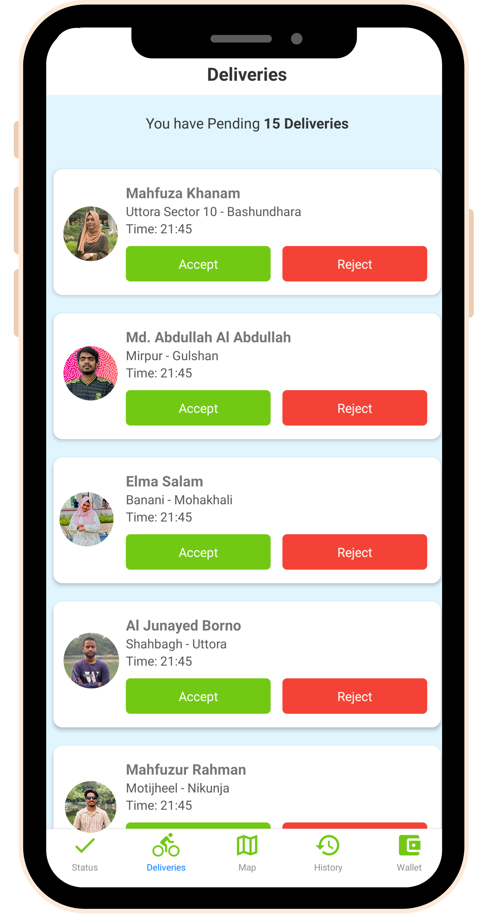
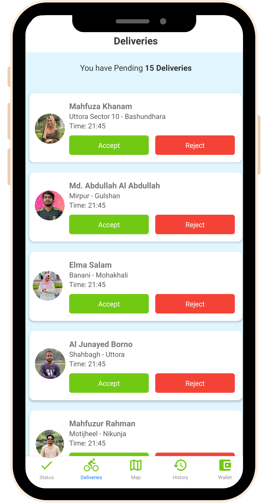

Education
Education is the key to unlocking the potential within ourselves and others. It empowers us to expand our knowledge, cultivate critical thinking, and drive positive change in the world. By embracing a lifelong commitment to learning, we can inspire and uplift those around us, creating a brighter future for all.
Secondary School Ceritificate (SSC)
I successfully completed my Secondary School Certificate (SSC) in the Science Group at Sherpur Government Victoria Academy (SGVA) in the year 2016. This rigorous academic experience equipped me with a strong foundation in scientific principles and knowledge, which has proven to be a valuable asset in my academic and professional pursuits.
Higher Secondary School Ceritificate (HSC)
I obtained my Higher Secondary School Certificate (HSC) in the Science Group from Sherpur Government College (SGC) in 2018, solidifying my academic background in the sciences. extent one more Sentence. This comprehensive education has provided me with a robust foundation in scientific principles and prepared me for further academic pursuits in the field.

Undergraduation
Since 2020, I have been enrolled at Independent University, Bangladesh (IUB), pursuing a degree in Computer Science and Engineering. This academic journey has allowed me to delve deeper into the realm of technology, fostering my passion for innovation and problem-solving within the field. Through rigorous coursework and practical experience, I continue to enhance my skills and knowledge in this dynamic discipline.
Internship
I successfully completed my internship at FlyInfosoft Technologies Limited as a Junior Software Engineer, where my primary responsibility was developing mobile applications using React Native and TypeScript. During my time there, I contributed to the ongoing project "FlyRider," a mobile app designed to enhance user experience in the transportation industry. I was involved in coding, debugging, and optimizing features, collaborating with cross-functional teams to ensure the app met performance and usability standards.


 
